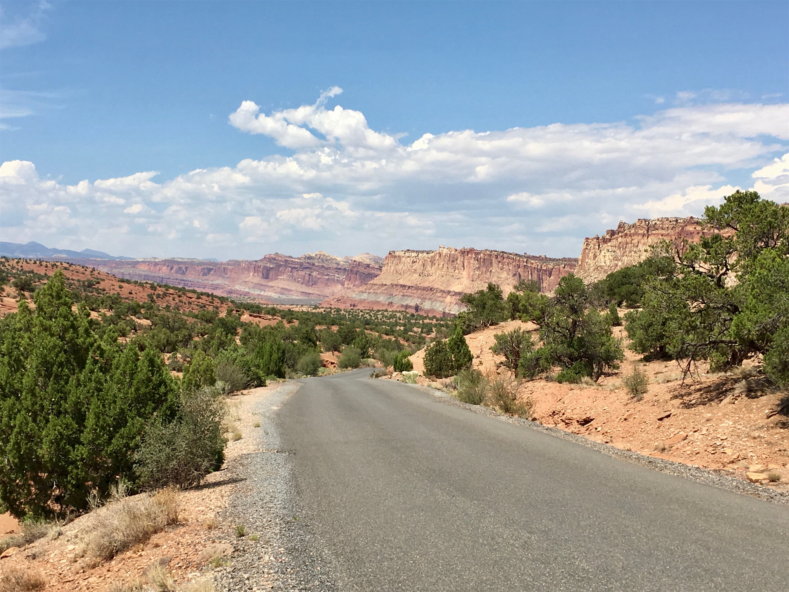

Friday, Jul 27, 2018, 1:19 PM MDT
Capitol Reef National Park Visitor Center, Teasdale, UT, United States
97°F Sunny
97°F Sunny
![]()
7/27 Bryce Canyon Lodge, UT -> Capitol Reef Visitor Center, UT 128 mi, 3.75 hr
7/27 Capitol Reef Visitor Center, UT -> Scenic Drive (RT) -> Torrey, UT 24 mi, 2 hr
Trip Total: 9,387 mi
Heading northeast from Bryce, we took Scenic Byway 12, one of the most spectacular roads we have ever driven, with giant rocky structures of every shape, size, and color and dramatic changes at every turn. We stopped at an overlook of the Grand Staircase-Escalante Monument (2 million acres, until Trump cut it in half). It is one of the most remote spots in the US and the result of water coming down from the Colorado Plateau, which is responsible for all of the Utah National Parks formations, continuing to the Grand Canyon.
While driving the road across Boulder Mountain, at about 9,500 ft, the temperature dropped to 40 degrees and we ran into rain and sleet. A short time later, the temperature was near 90, a 50 degree change within about an hour!
The road ended in Torrey, our overnight stay, but we overshot it and went right to Capitol Reef. This park is along a 100-mile fold in the Earth’s crust that reveals layers and colors of ancient rock. The park also gets our vote for worst name. It is called “reef” because it was a major obstacle to travel to the West, like an ocean reef is an obstacle for ship travel. It is called “capitol” because it has some white domes that look like the US Capitol.
The visitor center is in an historic Mormon settlement called Fruita, where no more than 10 families lived. They created an orchard of fruits and nuts, which remains today (3,100 trees) and visitors are welcome to pick and eat anything that is in season for free. Unfortunately, we were between seasons, so there was nothing to eat. We drove the 10-mile north-south scenic drive down and back, seeing spectacular rock formations and views along the fold, and headed back to Torrey. The next morning, we drove out of the park headed on the west-east road that crosses the narrow width of the park and the fold, and caught a glimpse of the gray dome that gives this park the first part of its name.
